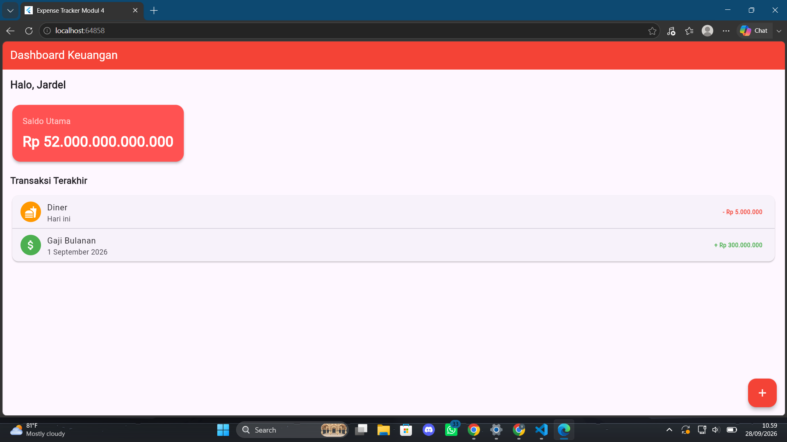
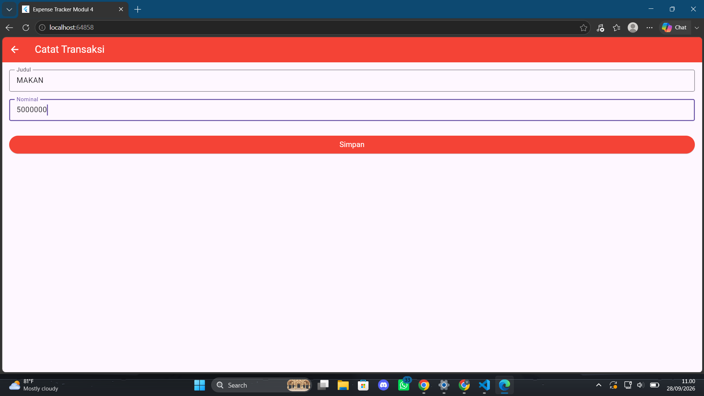
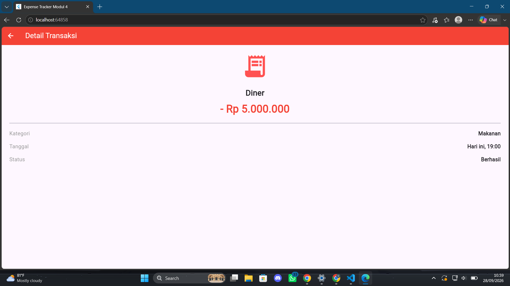
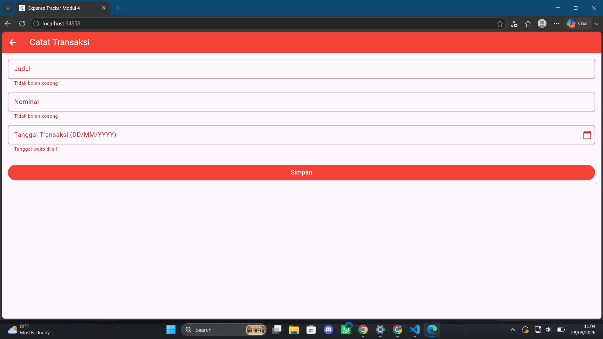
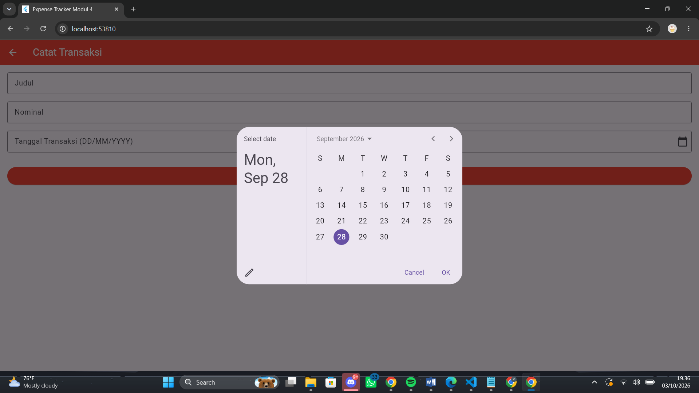
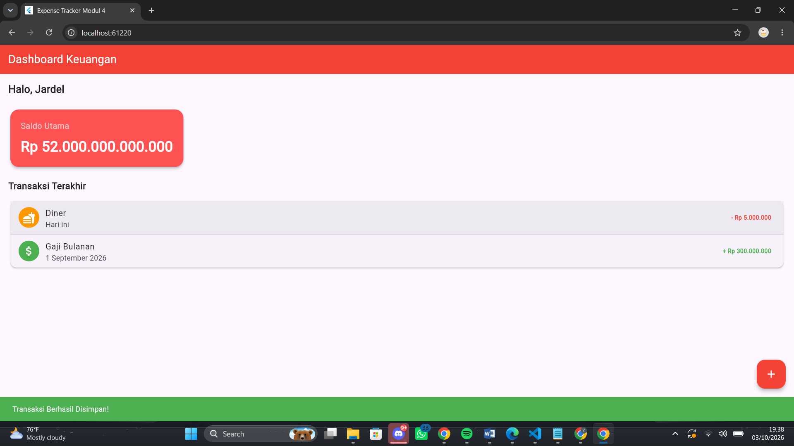

Laporan Praktikum 4
Mata Kuliah: Aplikasi Mobile
A. Langkah Praktikum
1. Halaman Detail Transaksi
a. Struktur Class dan Parameter Constructor:
class TransactionDetailScreen extends StatelessWidget {
final String title;
final String amount;
final String category;
final String date;
const TransactionDetailScreen({
super.key,
required this.title,
required this.amount,
required this.category,
required this.date,
});
Mendefinisikan sebuah halaman statis bernama TransactionDetailScreen yang bertugas menerima data dari layar sebelumnya melalui konsep passing data. Karena menggunakan StatelessWidget, variabel penampung data seperti title, amount, category, dan date dideklarasikan dengan kata kunci final sehingga nilainya tetap dan tidak dapat diubah setelah diinisialisasi. Data tersebut kemudian diterima melalui constructor yang dilengkapi penanda required, yang berarti layar pemanggil wajib mengirimkan seluruh parameter tersebut secara lengkap saat melakukan navigasi agar program dapat berjalan tanpa error.
b. Perancangan UI (Build Method):
@override
Widget build(BuildContext context) {
return Scaffold(
appBar: AppBar(
title: const Text("Detail Transaksi"),
backgroundColor: Colors.red,
foregroundColor: Colors.white,
),
body: Padding(
padding: const EdgeInsets.all(24.0),
child: Column(
crossAxisAlignment: CrossAxisAlignment.center,
children: [
const Icon(Icons.receipt_long, size: 80, color: Colors.redAccent),
const SizedBox(height: 24),
Text(
title,
style: const TextStyle(fontSize: 24, fontWeight: FontWeight.bold),
),
const SizedBox(height: 8),
Text(
amount,
style: const TextStyle(
fontSize: 32,
fontWeight: FontWeight.bold,
color: Colors.red,
),
),
const Divider(height: 40, thickness: 2),
_buildDetailRow('Kategori', category),
const SizedBox(height: 16),
_buildDetailRow('Tanggal', date),
const SizedBox(height: 16),
_buildDetailRow('Status', 'Berhasil'),
],
),
),
);
}
Metode build bertugas untuk merancang antarmuka visual halaman detail transaksi menggunakan kerangka Scaffold. Bagian atasnya menampilkan AppBar berwarna merah dengan judul teks putih, sedangkan bagian utamanya (body) menggunakan widget Column untuk menyusun elemen secara vertikal di tengah layar dengan jarak bantalan (padding) yang rapi. Elemen-elemen yang ditampilkan secara berurutan meliputi ikon struk, teks dari variabel title dan amount yang datanya diterima dari layar pemanggil sebelumnya, sebuah garis pemisah (Divider), dan diakhiri dengan pemanggilan fungsi pembantu _buildDetailRow untuk menyusun teks informasi kategori, tanggal, dan status transaksi agar tampil rapi dan sejajar.
2. Detail & Mengirim Data (Push)
ListTile(
leading: const CircleAvatar(
backgroundColor: Colors.green,
child: Icon(Icons.attach_money, color: Colors.white),
),
title: const Text('Gaji Bulanan'),
subtitle: const Text('1 September 2026'),
trailing: const Text(
'+ Rp 300.000.000',
style: TextStyle(color: Colors.green, fontWeight: FontWeight.bold),
),
onTap: () {
Navigator.push(
context,
MaterialPageRoute(
builder: (context) => const TransactionDetailScreen(
title: 'Gaji Bulanan',
amount: '+ Rp 300.000.000',
category: 'Pemasukan',
date: '1 September 2026',
),
),
);
},
),
Menggunakan widget ListTile untuk merancang tampilan satu baris item pada daftar transaksi yang secara visual terdiri dari ikon uang, judul transaksi, tanggal, dan nominal pemasukan. Inti dari blok kode ini terletak pada penggunaan parameter onTap yang memanfaatkan perintah Navigator.push untuk memicu perpindahan layar menuju halaman TransactionDetailScreen. Pada saat proses navigasi tersebut dieksekusi, kode ini secara bersamaan melakukan praktik passing data dengan menyuntikkan nilai spesifik seperti judul, nominal, kategori, dan tanggal langsung ke dalam constructor halaman tujuan agar data tersebut siap dirender pada layar detail.
3. Menutup Layar / Kembali Otomatis (Pop)
ElevatedButton(
style: ElevatedButton.styleFrom(
backgroundColor: Colors.red,
foregroundColor: Colors.white,
padding: const EdgeInsets.symmetric(vertical: 16),
),
onPressed: () {
if (_formKey.currentState!.validate()) {
ScaffoldMessenger.of(context).showSnackBar(
const SnackBar(
content: Text('Transaksi Berhasil Disimpan!'),
backgroundColor: Colors.green,
),
);
// Kembali ke Halaman Dashboard
Navigator.pop(context);
}
},
child: const Text("Simpan", style: TextStyle(fontSize: 16)),
),
Mendefinisikan sebuah tombol simpan menggunakan widget ElevatedButton yang akan mengeksekusi serangkaian aksi saat ditekan. Pertama, blok kode di dalam parameter onPressed melakukan validasi terhadap status form untuk memastikan seluruh kolom input telah diisi dengan benar. Jika proses validasi berhasil, sistem akan menampilkan pesan notifikasi sukses berwarna hijau menggunakan SnackBar, lalu langsung disusul dengan eksekusi perintah Navigator.pop yang berfungsi untuk menghapus atau menutup halaman formulir saat ini dari tumpukan layar, sehingga pengguna akan kembali secara otomatis ke halaman sebelumnya, yaitu Dashboard.
4. Output Langkah Praktikum
Aplikasi menampilkan halaman utama berupa Dashboard Keuangan yang berisi ringkasan saldo utama dan daftar transaksi terakhir. Ketika salah satu item transaksi pada daftar ditekan, sistem melakukan navigasi berpindah layar ke halaman Detail Transaksi dengan membawa data item tersebut. Pada layar detail, informasi seperti ikon struk, nominal, kategori, tanggal, serta status transaksi ditampilkan secara terstruktur. Selain itu, pada halaman Catat Transaksi, setelah pengguna mengisi data dan menekan tombol Simpan, aplikasi akan memicu validasi dan menampilkan notifikasi sukses sebelum secara otomatis menutup layar dan kembali ke Dashboard.

Gambar 1: Tampilan Dashboard Keuangan

Gambar 2: Tampilan Halaman Detail Transaksi

Gambar 3: Tampilan Halaman Catat Transaksi
B. LATIHAN
1. Logika Pemilihan Tanggal Kalender
a. Inisialisasi Controller:
final _dateController = TextEditingController();Digunakan untuk menampung teks tanggal transaksi yang dipilih oleh pengguna dari dialog kalender.
b. Fungsi Asinkron Dialog Kalender:
Future<void> _selectDate(BuildContext context) async {
final DateTime? picked = await showDatePicker(
context: context,
initialDate: DateTime.now(),
firstDate: DateTime(2000),
lastDate: DateTime(2101),
);
if (picked != null) {
setState(() {
String day = picked.day.toString().padLeft(2, '0');
String month = picked.month.toString().padLeft(2, '0');
String year = picked.year.toString();
_dateController.text = "$day/$month/$year";
});
}
}
Fungsi async yang bertugas untuk menampilkan dialog kalender bawaan Flutter (showDatePicker) dengan rentang tahun dari 2000 hingga 2101. Ketika pengguna memilih tanggal dan mengonfirmasinya, nilai tanggal tersebut diformat menjadi string berformat DD/MM/YYYY dan dimasukkan ke dalam _dateController melalui pemanggilan setState.
2. Integrasi Widget Input Tanggal Transaksi
TextFormField(
controller: _dateController,
readOnly: true, // Mencegah pengetikan manual
decoration: InputDecoration(
labelText: "Tanggal Transaksi (DD/MM/YYYY)",
border: const OutlineInputBorder(),
suffixIcon: IconButton(
icon: const Icon(Icons.calendar_today),
onPressed: () => _selectDate(context),
),
),
onTap: () => _selectDate(context),
validator: (value) =>
value == null || value.isEmpty ? "Tanggal wajib diisi!" : null,
),
Komponen UI input tanggal diletakkan sebelum tombol Simpan. Widget ini dikonfigurasi dengan properti readOnly: true untuk mencegah pengetikan manual, serta disemati ikon kalender (suffixIcon) dan handler onTap yang akan memanggil fungsi _selectDate(context). Komponen ini juga dilengkapi fungsi validasi agar tanggal tidak boleh dikosongkan saat pengiriman form.
3. Output Latihan
Pengujian fitur latihan menunjukkan bahwa saat form dicoba disimpan dalam keadaan kosong, sistem menjalankan validasi dan menampilkan pesan peringatan berwarna merah "Tanggal wajib diisi!" beserta peringatan pada kolom judul dan nominal. Ketika pengguna mengetuk kolom tanggal atau ikon kalender, jendela pemilih tanggal (showDatePicker) akan muncul. Setelah tanggal dipilih dan tombol Simpan ditekan, transaksi berhasil disimpan dengan munculnya notifikasi SnackBar hijau, lalu aplikasi melakukan navigasi kembali ke halaman Dashboard Keuangan.

Gambar 4: Output Validasi Form Input Tanggal

Gambar 5: Output Dialog Pemilihan Tanggal (DatePicker)

Gambar 6: Output Notifikasi Sukses Simpan dan Kembali ke Dashboard
Detail Praktikum 4
- Navigasi & Passing Data (
Navigator.push) - Parameter Constructor (
StatelessWidget) - Penutupan Layar / Pop (
Navigator.pop) - Pemilihan Tanggal Asinkron (
showDatePicker) - Controller Tanggal (
TextEditingController) - Validasi & Read-Only Input Tanggal